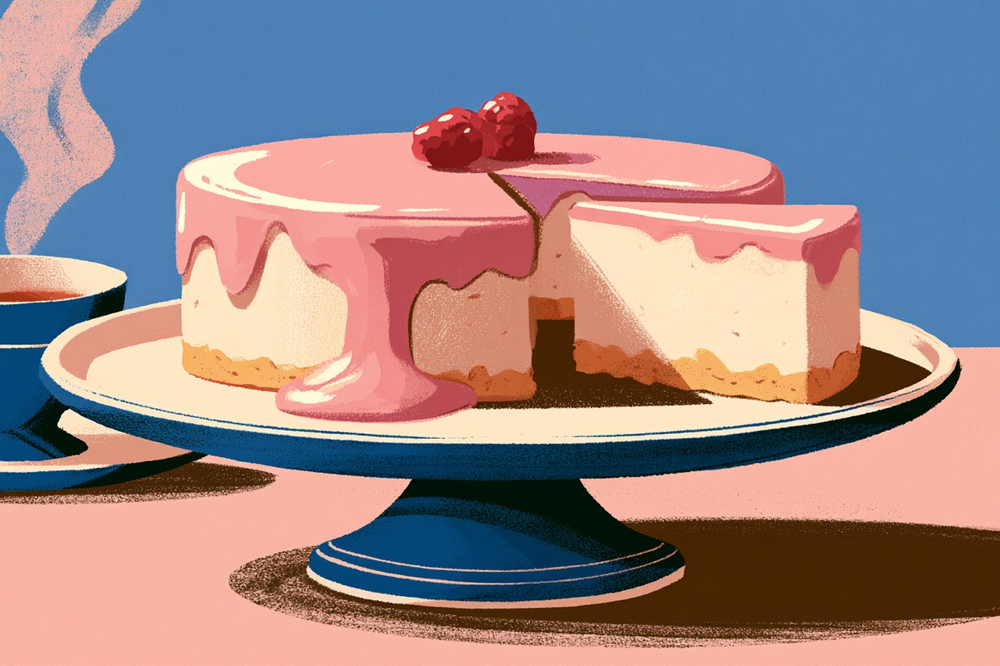
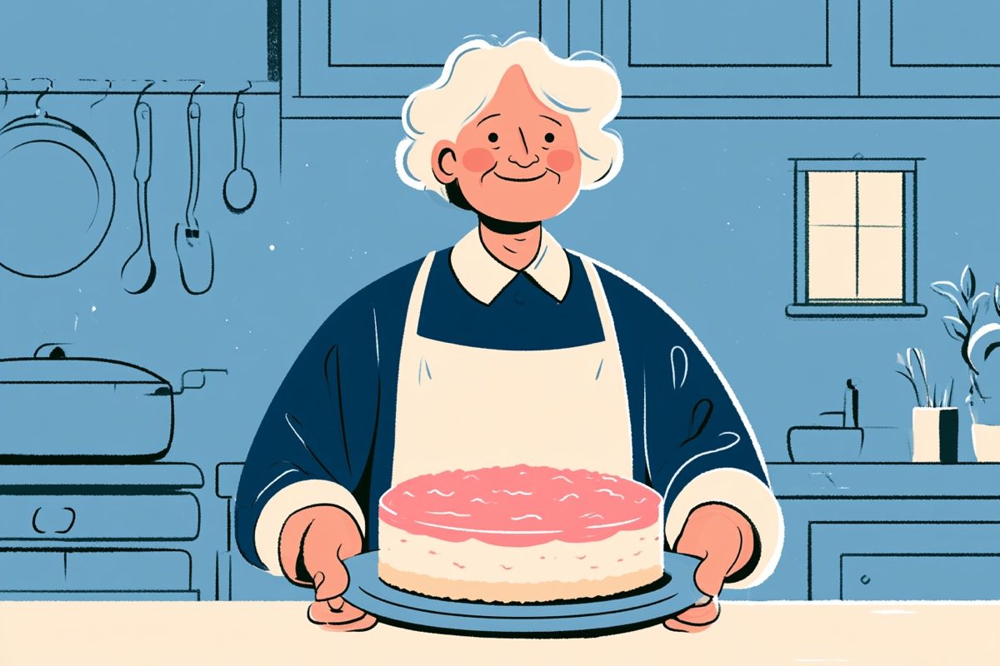
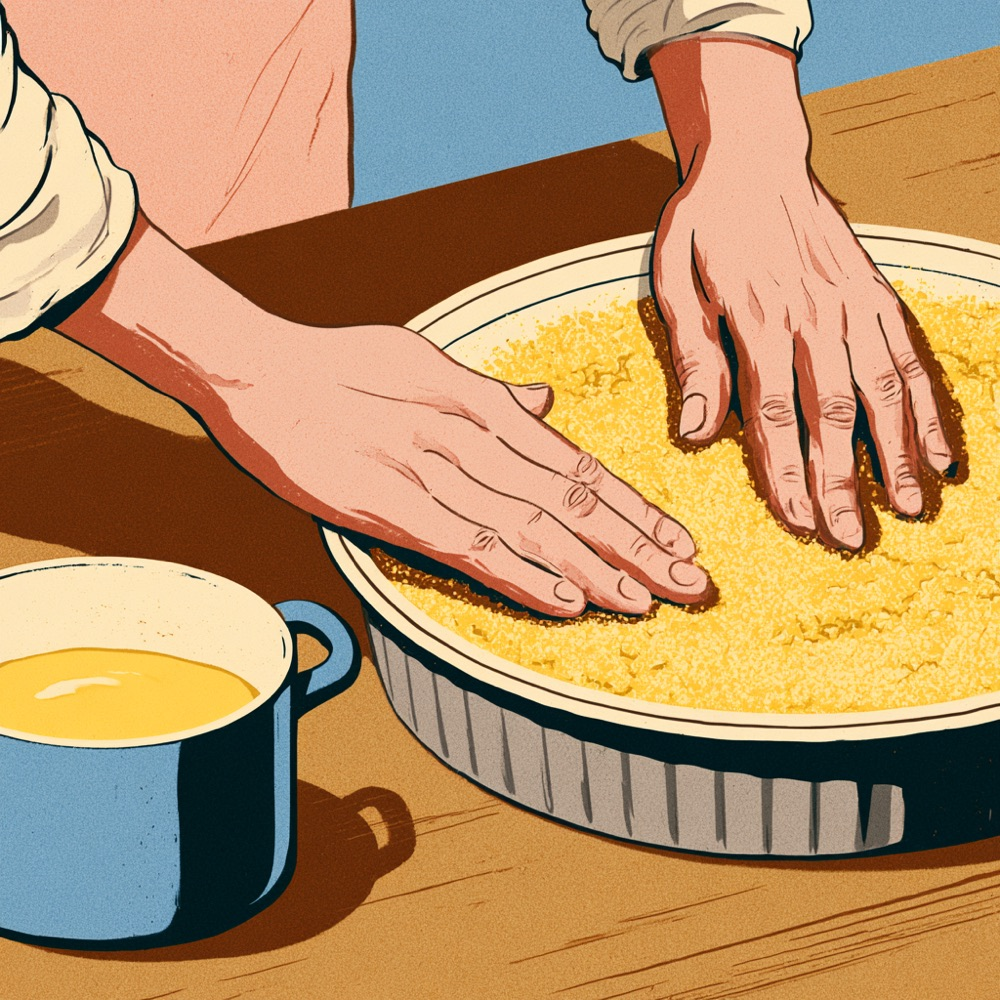
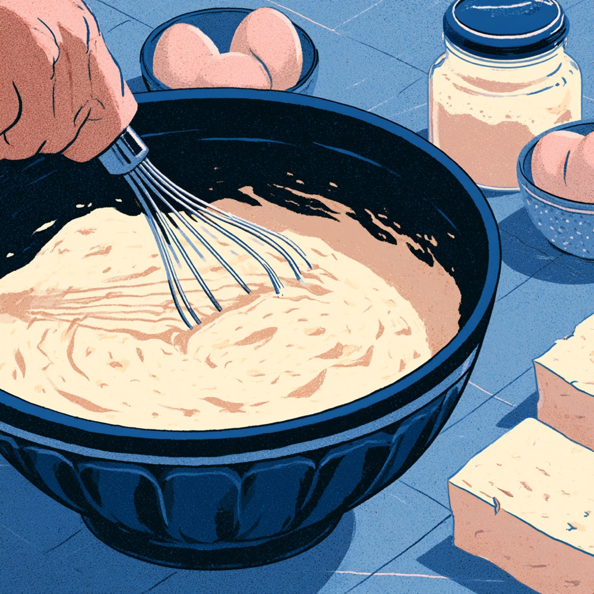
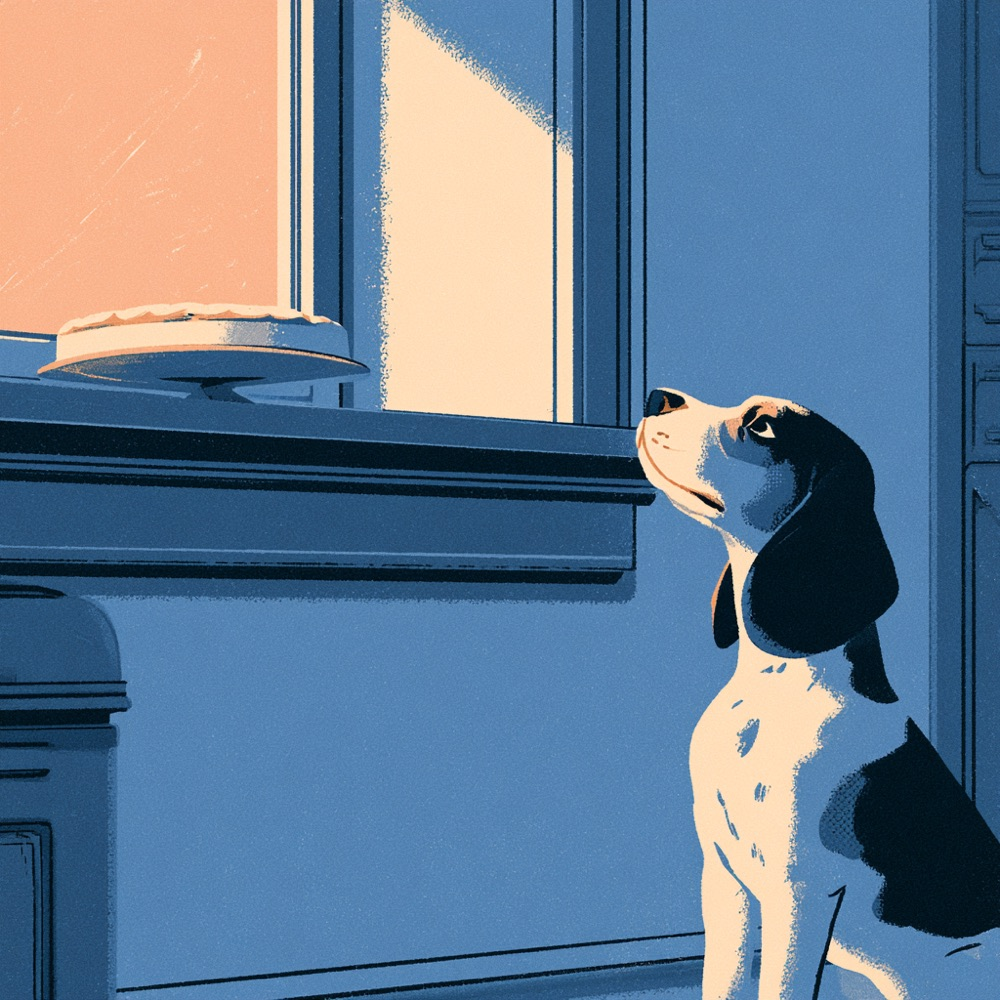
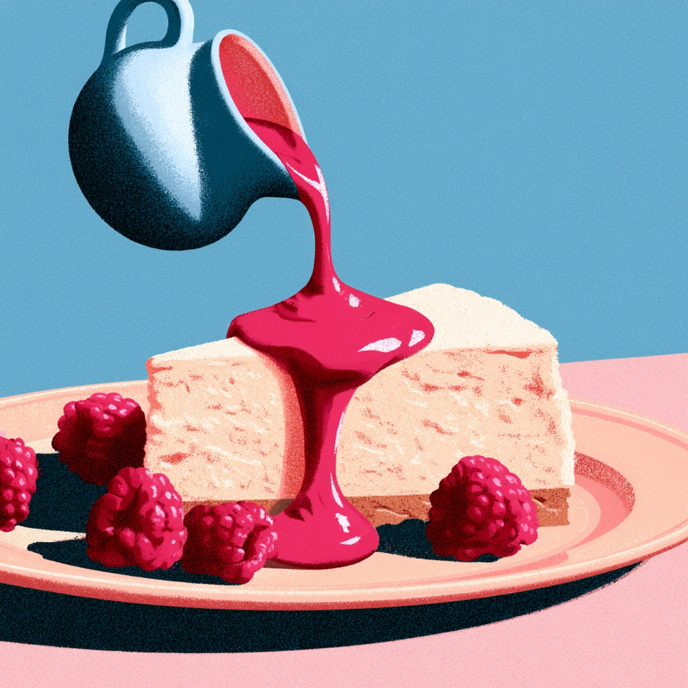

El cheesecake de la abuela de Connie. Una receta con historia, de esas que se hacen con las manos y sin apuro. Súper simple, como las cosas que duran. En la casa se viste de rosa.
Cantidades de referencia · la receta de la abuela viene en camino y esta página se ajusta a lo que ella mande

El Delaire, listo para la vitrina. La cubierta rosa es la firma.桜 · さくら
LA HISTORIA
Viene de una cocina de verdad
Antes de llegar a la vitrina, este cheesecake vivió años en la cocina de la abuela de Connie. Se hacía para las visitas, para los domingos, para celebrar sin motivo. La receta pasa a la casa tal como es: pocos ingredientes, gestos simples, paciencia. Lo único que suma The Daily Grind es el toque rosa por encima, para que se reconozca de lejos.

La autora original, con su torta. La receta se respeta.
MOLDE
24 cm
RINDE
12 porciones
MANOS ACTIVAS
~1,5 h
REPOSO FRÍO
4 h mínimo
VIDA EN VITRINA
4 días frío
SE VENDE
$4.500
Cómo se hace · en cuatro gestos
Cada paso con lo suyo. Si es tu primera vez, léelo entero antes de partir y deja todo pesado sobre el mesón.

一
La base
Muele la galleta hasta que quede arena. Mezcla con la mantequilla derretida y presiona pareja contra el fondo del molde, con los dedos o con la base de un vaso. Al frío mientras sigues.
Galleta molida250 g
Mantequilla derretida120 g
Pareja y firme: la base es el piso de todo lo que viene.

二
La mezcla
Bate el queso crema con el azúcar hasta que esté suave, sin grumos. Suma los huevos de a uno, después la crema, la vainilla y la ralladura de limón. Batir lo justo: si se bate de más, se agrieta en el horno. Vierte sobre la base.
Queso crema750 g
Azúcar180 g
Huevos3
Crema200 ml
Vainilla + ralladura de limóna gusto

三
El reposo
Horno suave a 160 °C por unos 50 minutos: está listo cuando los bordes firmes y el centro apenas tiembla. Se enfría dentro del horno apagado con la puerta entreabierta, y después mínimo 4 horas de refrigerador. De un día para otro queda mejor. El perro de la casa ya lo sabe: lo difícil es esperar.
Horno160 °C · ~50 min
Frío4 h mínimo

四
El toque rosa
Frambuesas a fuego suave con el azúcar hasta que suelten su jugo; la maicena disuelta al final para que brille y tome cuerpo. Se cuela si se quiere fino, se deja rústico si se quiere honesto. Sobre la torta completa antes de vitrina, o sobre cada porción al servir.
Frambuesa300 g
Azúcar3 cdas
Maicena1 cdta
El rosa es del Delaire y de nadie más: en la carta de la casa, ningún otro postre lo lleva.
EN LA VITRINA
Cómo se sirve en la casa
Porción limpia, cuchillo caliente y seco entre corte y corte. El toque rosa siempre a la vista: si la porción sale sin rosa, no es Delaire. Va acompañado de su historia — si alguien pregunta, se cuenta: es la receta de una abuela, y se respeta. En vitrina dura 4 días refrigerado; se etiqueta con fecha al entrar.